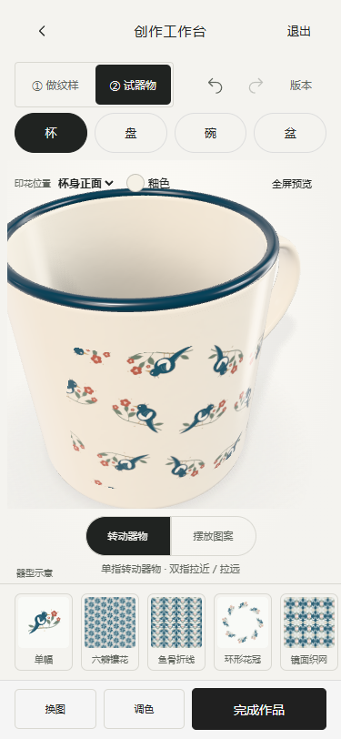
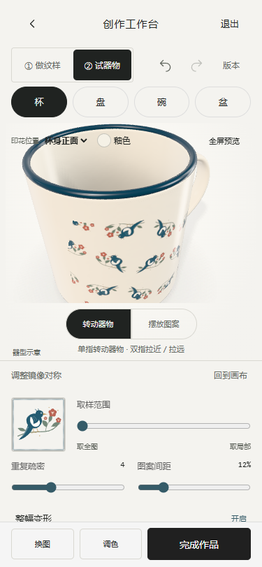

手机工作台减负 · 本地验收
2026-10-30。复用现有工作台和 IndexedDB 草稿，未部署或发布。
操作变化
- 器型按钮直接放在预览上方：杯、盘、碗、盆。切换保持纹样并恢复各自摆放。
- 默认大预览；素材、排布、配色、釉色、更多按需展开。取消默认的多排参数与版本工具条。
- 看器物：单指旋转，双指拉近/拉远。调纹样：拖动有效纹样区域，双指缩放/旋转该器型的摆放；二维画布手势改变纹样构图。
- 精确参数、快照、版本对比、平铺和导出保留。全屏预览的辅助控件折叠。每次完整手势一次撤销，取消不保存。
参考与边界
Repper 官方手机版说明明确强调拖动/捏合与手机简化功能。本次访问 m.repper.app 的浏览器连接持续超时，未完整操作其实际界面；本次为据官方手机说明进行的交互适配，非逐屏复刻。保留项目暖白、石墨黑与搪瓷蓝 tokens。
实际执行结果
- npm test：91/91；包含角度跨界、比例限制、双指转单指、取消不提交。
- npm run build:cup、npm run lint、npm run build：通过。
- qa-mobile-focus：真实 CDP 触摸事件验证同一 3D 对象旋转与缩放；图案手势不动相机；撤销重做；四器型切换；刷新恢复；实际 PNG 下载；全屏返回。
- qa-workbench 回归：取样拖动、排布、配色、版本对比恢复、平铺、PNG/SVG 下载、3D 纹样更新通过。
- qa-round05-build：构建后的单文件导航与真实 3D 通过。
- 320×640、375×812、390×844、430×932：工具收起/展开均无横向溢出，保存按钮可达。Edge 手机模拟环境，尚未进行实体手机实测。
本轮交互结果 · 单元测试记录 · 语法检查 · 构建日志
375px 页面


实际变更文件
运行与未接入事项
本地工作台；如无活动草稿会进入我的，请从共创开始。项目目录执行 $env:PORT=8879; npm start。模型为程序化示意；AI 图像服务、正式馆藏授权、云端共享、馆方积分及工厂生产均未接入。本轮未调用外部 AI，未上传 GitHub。